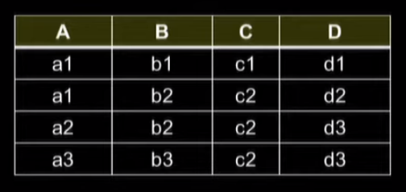
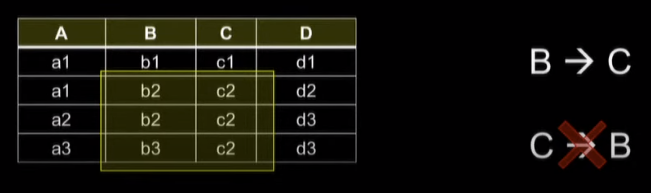
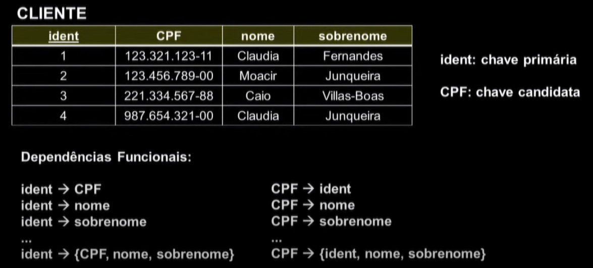
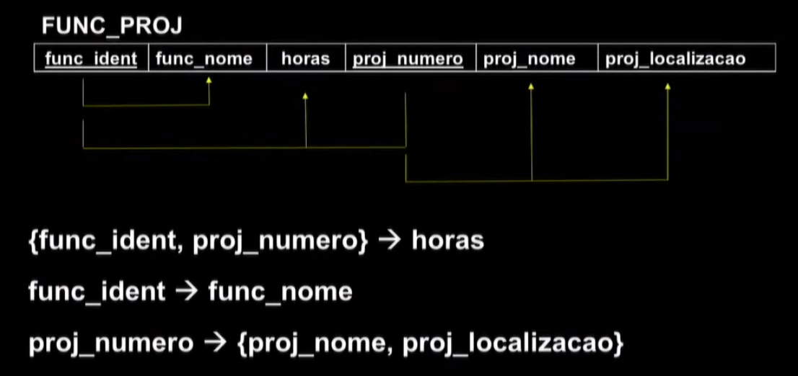

Disciplinas
-
BANCO DE DADOS-T01-2024-1 Concluído
Materiais
Vídeo 1 - Bancos de Dados - Aula 18 - Dependências Funcionais. sendProfessor ministrante: Sarajane Peres.
Conteúdo
Dependências Funcionais.
Dependências funcionais.
- Uma dependência funcional (DF) é uma restrição imposta a dois conjuntos de atributos de um banco de dados.
- Trata-se de uma restrição que é estabelecida pelo projetista do banco de dados, de acordo com as regras que valem no mundo real que está sendo modelado;
- É uma ferramenta que permite estabelecer uma formalização para a avaliação da qualidade do projeto de banco de dados.
Suponha que:
- Nosso esquema de banco de dados relacional possua os atributos A, B, C e D;
- E que ele seja composto de um único esquema de relação UNIVERSAL = {A, B, C, D}.
Uma dependência funcional, denotada por X 🢂 Y, estabelecida para dois conjuntos de atributos (X e Y) que são subconjuntos de um esquema de relação R, especifica uma restrição sobre as possíveis tuplas que podem ser formadas em um estado r de relação R.
- A restrição é que:
- para quaisquer duas tuplas t₁ e t₂ em r que possuam t₁[X] = t₂[X], essas tuplas devem também possuir t₁[Y] = t₂[Y].
- A restrição X 🢂 Y pode ser lida de diferentes formas:
- X leva a Y
- X determina funcionalmente Y (ou X determina Y)
- Y é determinado funcionalmente por X (ou Y é determinado por X)
- Y é funcionalmente dependente de X
- O conjunto de atributos X é chamado de "lado esquerdo da DF" e o conjunto de atributos Y é chamado de "lado direito da DF".
Exemplo:
Para o nosso esquema hipotético UNIVERSAL, estabeleceremos a seguinte dependência funcional:
B 🢂 C
Considerando esta restrição, a instância de relação apresentada é válida?
Ex.:
B 🢂 C
Para os pares de tuplas nas quais os valores do atributo B são iguais (t2 e t3), os valores no atributo C também são iguais?
- Sim, a instância de relação é válida.X determina funcionalmente Y em um esquema de relação R se, e somente se, sempre que duas tuplas de r(R) concordarem nos seus valores-X, elas necessariamente concordam nos seus valores-Y.
Então note que:
Afirmar que X 🢂 Y vale em R não significa afirmar que Y 🢂 X vale em R. Ou a partir da validade da restrição X 🢂 Y nada pode ser dito sobre a validade da restrição Y 🢂 X.
Ex.:
X determina funcionalmente Y em um esquema de relação R se, e somente se, sempre que duas tuplas de r(R) concordarem nos seus valores-X, elas necessariamente concordam nos seus valores-Y.
Então note que:
Se X é uma chave candidata de R, então X 🢂 Y para qualquer subconjunto de atributos Y de R. Ou seja, X 🢂 R.
Ex.:
Uma dependência funcional é uma propriedade semântica dos atributos, e por isso ela é derivada do conhecimento que o projetista do banco de dados tem do mundo real que está sendo modelado.
O principal uso das dependências funcionais é descrever um esquema de relação de forma mais detalhada, por meio da especificação de restrições em seus atributos que devem ser garantidas todo o tempo.
Considerando os seguintes esquemas (de baixa qualidade), vejamos quais dependências funcionais gostaríamos de estabelecer.
Ex.:
Ex.:
Uma dependência funcional é uma propriedade do esquema de relação R e não de um estado de relação de R em particular.
Ex.:
Ex.:
Não pode haver instâncias de relações no banco de dados que violem as dependências funcionais estabelecidas pelo projetista do banco de dados.
- Devemos garantir que as dependências funcionais não estão sendo violadas:
- Primeiro (preferível): estabelecendo um bom projeto de banco de dados.
- Segundo: implementando funções.
Estes slides estão baseados na bibliografia:
Mapeamento MER 🢂 Relacional Parte III: relacionamentos n-ários, especialização-generalização, agregação.